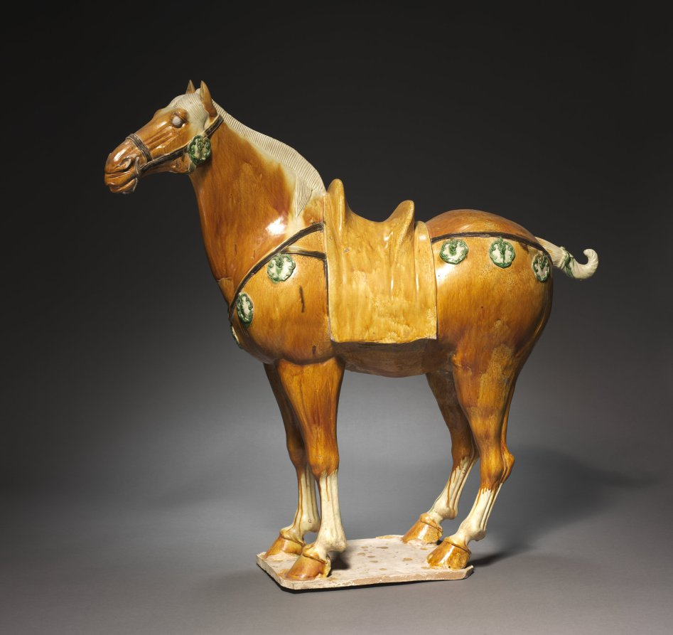
still standing very still for us
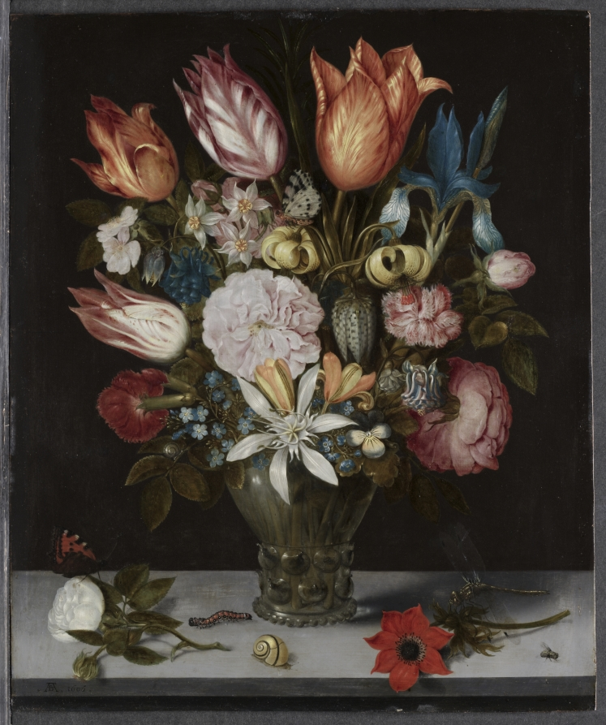
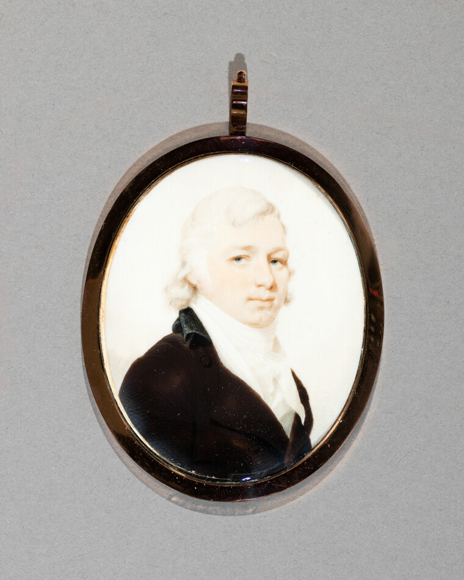
i saved this
for you
hi. ok so. i don't totally know how to explain this wall except: i kept finding things — real things, made by real hands, some of them thousands of years old — and every single time my whole chest would do the thing, and i'd want to grab somebody's sleeve and go you have to see this.
so i started printing them out and taping them up. and it got a little completely out of hand. a poem about laundry from 1600. a cat somebody carved because they loved a cat. love letters older than every country you've heard of. i couldn't keep it to myself. i'm not a museum, i'm just a person who got moved and couldn't shut up about it.
i made these rooms so you have somewhere to wander. go in any door. tip a thing over. stay as long as you want. i saved all of it for you.
— come in, it's open↓ the doors are all unlocked, pick one ↓

i never put things in order either ↴ ha
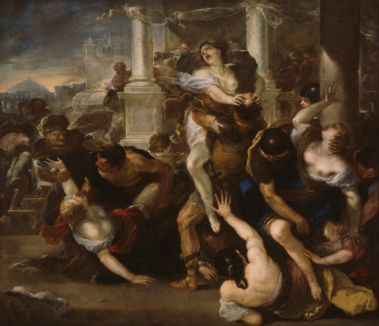


at 2am and just
sat there. ↓ the table
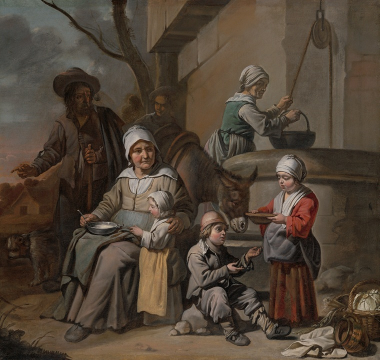
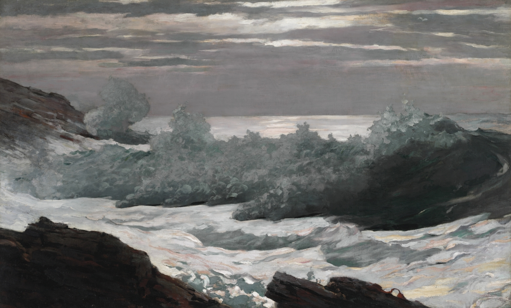
— make it the letters ↓
(i cannot get over them)
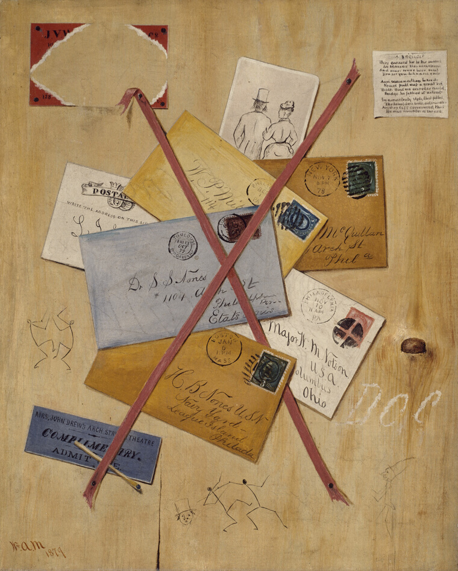
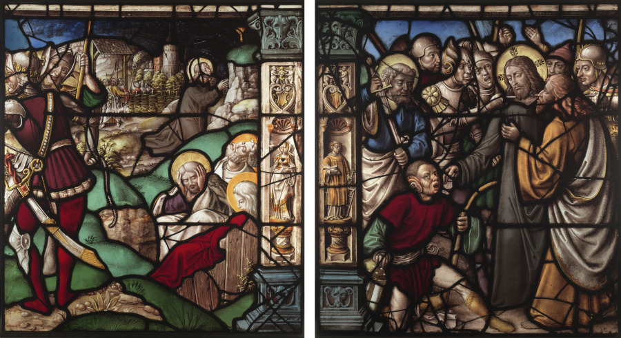
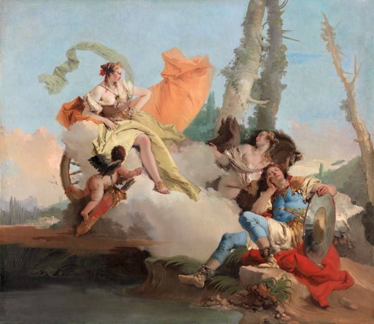
more rooms tomorrow,
i promise. ✶ ❀ listen

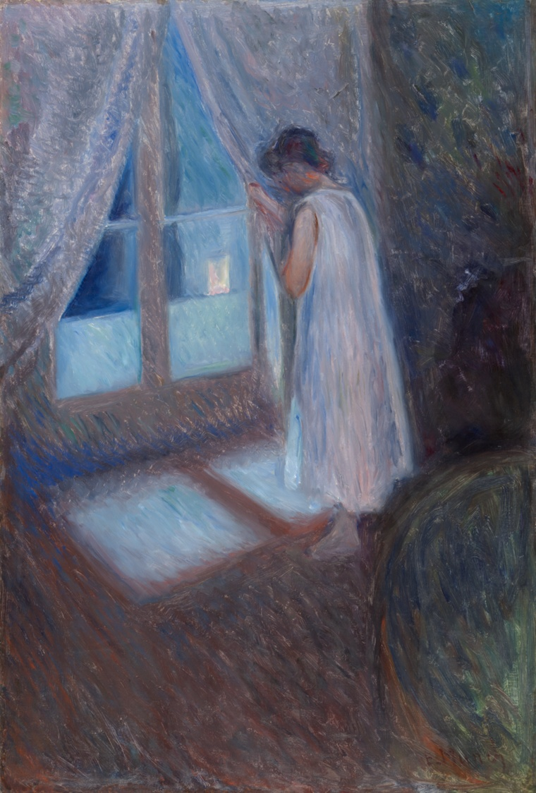
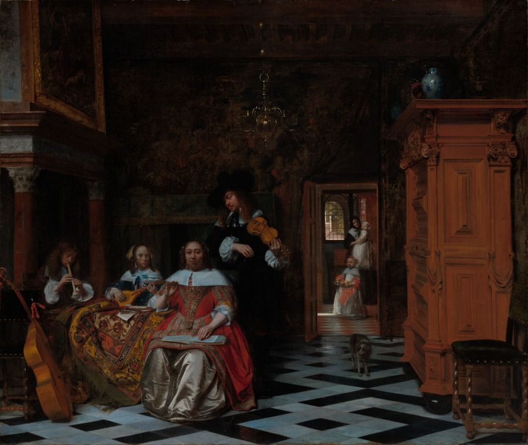
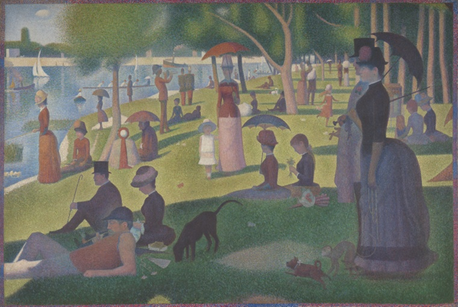
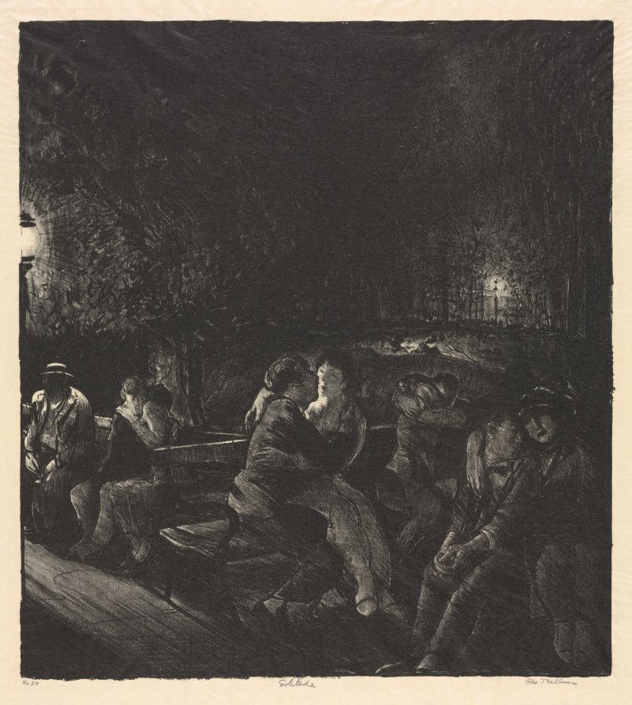
p.s. there is a quieter, older version i made first, before i knew what this was — (there is a quieter, older version i made first — it lives in here). it's clumsier. i still love it. don't judge it too hard.
made by hand, late, by one person who got moved and couldn't keep it to themselves · every image + poem here is real and really made by a human being · if a door is dusty i haven't swept it yet, sorry · i left the typos in on purpose (mostly) · thank you for coming · now go look at something beautiful ✷